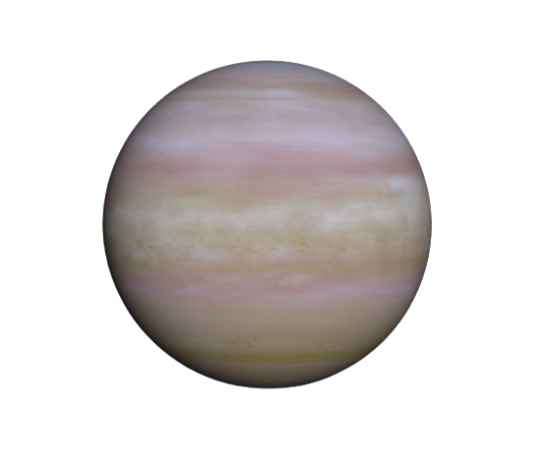
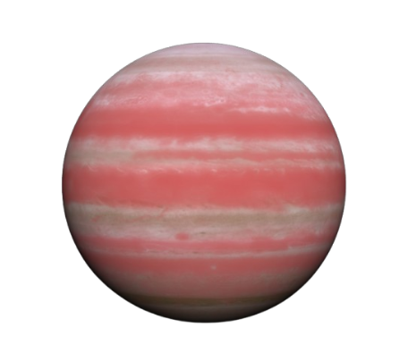

🌌 Explore Exoplanets & ExoSky
Discover fascinating worlds beyond our solar system! Learn about exoplanets, their distances, and compare them.
Planets
HD 70642 b
29.28 pc
K2-151 b
69.48 pc
HAT-P-54 b
143.65 pc
K2-369 b
185.55 pc
Kepler 1907
292.55 pc
WASP-15 b
282.55 pc
Kepler-20 d
282.55 pc
WASP-58 b
290.55 pc
Kepler-61 b
335.08 pc
Kepler-1998 b
340.97 pc
Kepler-1552 b
769.10 pc
Kepler-480 b
847.51 pc

Kepler-818 b
925.51 pc
Kepler-976 b
1012.41 pc
Kepler-188 c
968.54 pc
Kepler-902 b
1165.34 pc
Kepler-1295 b
1174.34 pc
Kepler-647 c
1087.34 pc
Kepler-890 b
1712.34 pc

OGLE-2018-BLG-1126LÂ b
5700.34 pc
Interesting Facts About Exoplanets
- Some exoplanets orbit two stars, like Tatooine in Star Wars!
- KELT-9b is one of the hottest exoplanets, at 4000 K.
- Exoplanets vary from small rocky worlds to massive gas giants.
- Some exoplanets are tidally locked, always showing one face to their star.
- Thousands of exoplanets have been discovered using telescopes like Kepler and TESS.